This demo shows some of the key features of the generalized Remez FIR filter design function. This function provides all the functionality included in FIRPM plus many new features showcased here.
This is an illustration of the weighted-Chebyshev design. This example demonstrates the compatibility of FIRGR with FIRPM.
N = 22; % Filter order F = [0 0.4 0.5 1]; % Frequency vector A = [1 1 0 0]; % Magnitude vector W = [1 5]; % Weight vector [b,err,res]=firgr(N,F,A,W); hfvt = fvtool(b); set(hfvt, 'Color', [1 1 1])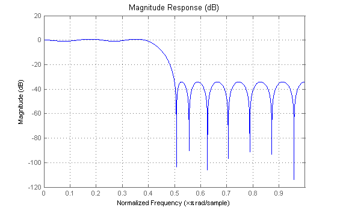
The following is a weighted-Chebyshev design where a type 4 filter (odd-order, asymmetric) has been explicitly specified.
N = 21; % Filter order F = [0 0.4 0.5 1]; % Frequency vector A = [0 0 1 1]; % Magnitude vector W = [2 1]; % Weight vector [b,err,res]=firgr(N,F,A,W,'4'); set(hfvt, 'Filter', dfilt.dffir(b));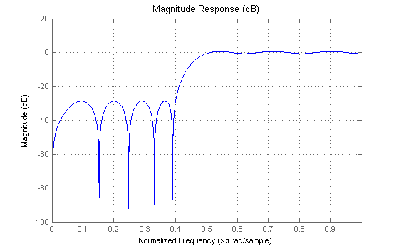
The following illustrates a "least-squares-like" design. A user-supplied frequency-response function (taperedresp.m) is used to perform the error weighting.
N = 53; % Filter order F = [0 0.3 0.33 0.77 0.8 1]; % Frequency vector fresp = {'taperedresp', [0 0 1 1 0 0]}; % Frequency response function W = [2 2 1]; % Weight vector [b,err,res]=firgr(N,F,fresp,W); set(hfvt, 'Filter', dfilt.dffir(b));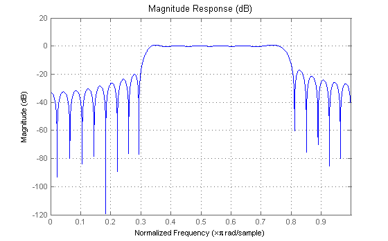
This is an illustration of a filter designed for specified single-point bands. The frequency points f=0.25 and f=0.55 are 's'ingle-band points. These points have a gain that approaches zero.
The other band edges are 'n'ormal.
N = 42; % Filter order F = [0 0.2 0.25 0.3 0.5 0.55 0.6 1]; % Frequency vector A = [1 1 0 1 1 0 1 1]; % Magnitude vector S = {'n' 'n' 's' 'n' 'n' 's' 'n' 'n'}; [b,err,res]=firgr(42,F,A,S); set(hfvt, 'Filter', dfilt.dffir(b), 'MagnitudeDisplay', 'Magnitude (dB)');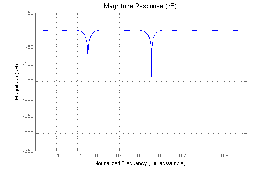
Here is an illustration of a filter designed for an exactly specified in-band value. The value is 'f'orced to be EXACTLY the specified value of 0.0 at f=0.06.
This could be used for 60 Hz rejection (with Fs = 2 kHz). The band edge at 0.055 is 'i'ndeterminate since it should abut the next band.
N = 82; % Filter order F = [0 0.055 0.06 0.1 0.15 1]; % Frequency vector A = [0 0 0 0 1 1]; % Magnitude vector S = {'n' 'i' 'f' 'n' 'n' 'n'}; [b,err,res]=firgr(N,F,A,S); set(hfvt, 'Filter', dfilt.dffir(b), 'MagnitudeDisplay', 'Zero-phase');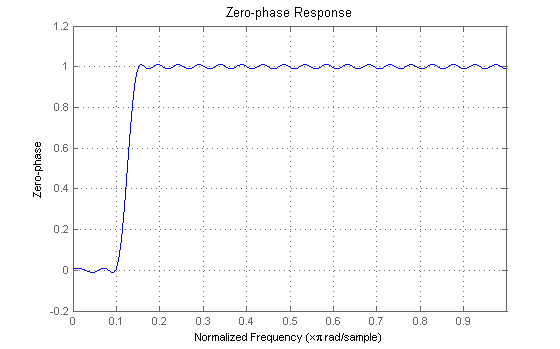
Here is an example of designing a filter using multiple independent approximation errors. This technique is used to directly design extra-ripple and maximal ripple filters.
One of the interesting properties that these filters have is a transition region width that is locally minimal. Further, these designs converge VERY quickly in general.
N = 12; % Filter order F = [0 0.4 0.5 1]; % Frequency vector A = [1 1 0 0]; % Magnitude vector W = [1 1]; % Weight vector E = {'e1' 'e2'}; % Approximation errors [b,err,res]=firgr(12,F,A,W,E); set(hfvt, 'Filter', dfilt.dffir(b), 'MagnitudeDisplay', 'Magnitude (dB)');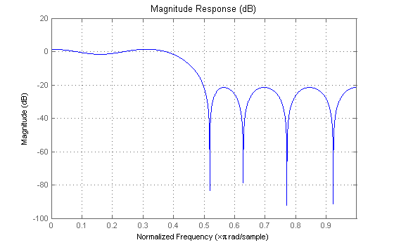
Here is an illustration of an extra-ripple bandpass filter having two independent approximation errors: one shared by the two passbands and the other for the stopband (in blue). For comparison, a standard weighted-Chebyshev design is also plotted (in green).
N = 28; % Filter order F = [0 0.4 0.5 0.7 0.8 1]; % Frequency vector A = [1 1 0 0 1 1]; % Magnitude vector W = [1 1 2]; % Weight vector E = {'e1','e2','e1'}; % Approximation errors [b,err,res]=firgr(N,F,A,W,E); [b2,err2,res2]=firgr(N,F,A,W); set(hfvt, 'Filter', [dfilt.dffir(b), dfilt.dffir(b2)]);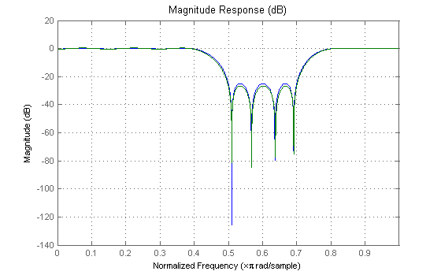
We'll now re-do our in-band-zero example using three independent errors.
Note: it is sometimes necessary to use independent approximation errors to get designs with forced in-band values to converge. This is because the approximating polynomial could otherwise be come very underdetermined. The former design is displayed in green.
N = 82; % Filter order F = [0 0.055 0.06 0.1 0.15 1]; % Frequency vector A = [0 0 0 0 1 1]; % Magnitude vector S = {'n' 'i' 'f' 'n' 'n' 'n'}; W = [10 1 1]; % Weight vector E = {'e1' 'e2' 'e3'}; % Approximation errors [b,err,res]=firgr(N,F,A,S,W,E); [b2,err,res]=firgr(N,F,A,S); set(hfvt, 'Filter', [dfilt.dffir(b), dfilt.dffir(b2)]);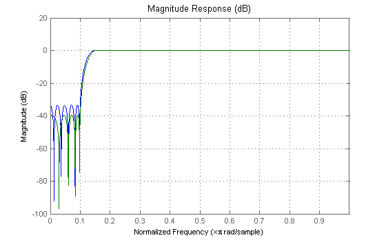
With the 'check' option, one is made aware of possible transition region anomalies in the filter that is being designed. Here is an example of a filter with an anomaly. The 'check' option warns one of this anomaly: One also get a results vector res.edgeCheck. Any zero-valued elements in this vector indicate the locations of probable anomalies. The "-1" entries are for edges that were not checked (there can't be an anomaly at f=0 or f=1).
N = 44; % Filter order F = [0 0.3 0.4 0.6 0.8 1]; % Frequency vector A = [1 1 0 0 1 1]; % Magnitude vector [b,err,res]=firgr(N,F,A,'check'); set(hfvt, 'Filter', dfilt.dffir(b));
Warning: Probable transition-region anomalies. Verify with freqz.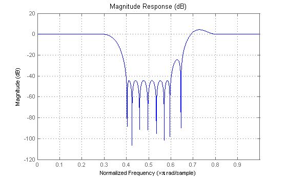
The FIRPM algorithm repeatedly designs filters until the first iteration wherein the specifications are met. The specifications are met when all of the required constraints are met. By specifying 'minorder', FIRPMORD is used to get an initial estimate. There is also 'mineven' and 'minodd' to get the minimum-order even-order or odd-order filter designs.
F = [0 0.4 0.5 1]; % Frequency vector A = [1 1 0 0]; % Magnitude vector R = [0.1 0.02]; % Deviation (ripple) vector [b,err,res]=firgr('minorder',F,A,R); set(hfvt, 'Filter', dfilt.dffir(b), 'MagnitudeDisplay', 'Zero-phase');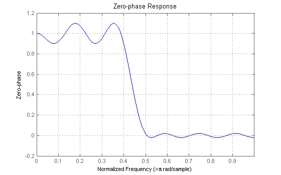
While using the minimum-order feature, an initial estimate of the filter order can be made. If this is the case, then FIRPMORD will not be used. This is necessary for filters that FIRPMORD does not support, such as differentiators and Hilbert transformers as well as user-supplied frequency-response functions.
N = {'mineven',18}; % Minimum even-order, start order estimate at 18
F = [0.1 0.9]; % Frequency vector
A = [1 1]; % Magnitude vector
R = [0.1]; % Deviation (ripple)
[b,err,res]=firgr(N,F,A,R,'hilbert');
set(hfvt, 'Filter', dfilt.dffir(b), 'FrequencyRange', '[0, 2pi)');
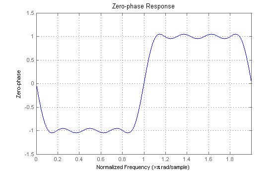 This section illustrates the use of an interpolation filter for upsampling band-limited signals by an integer factor. Typically one would use INTFILT(R,L,ALPHA) from the Signal Processing Toolbox to do this. However, INTFILT does not give one as much flexibility in the design as does FIRGR.
N = 30; % Filter order F = [0 0.1 0.4 0.6 0.9 1]; % Frequency vector A = [4 4 0 0 0 0]; % Magnitude vector W = [1 100 100]; % Weight vector [b,err]=firgr(N,F,A,W); set(hfvt, 'Filter', dfilt.dffir(b), 'MagnitudeDisplay', 'Magnitude (dB)',... 'FrequencyRange', '[0, pi)');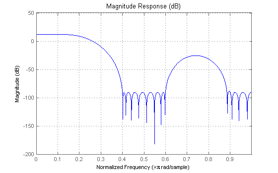
Here is a comparison made between a filter designed using FIRPM (blue) and a 30-th order filter designed using INTFILT (green).
Notice that by using the weighting function in FIRPM, one can improve the minimum stopband attenuation by almost 20dB.
b2=intfilt(4, 4, 0.4);
set(hfvt, 'Filter', [dfilt.dffir(b), dfilt.dffir(b2)]);
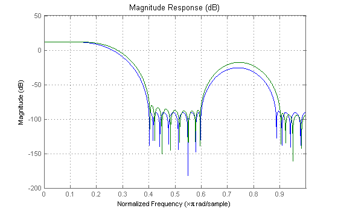 Notice in that the equi-ripple attenuation throughout the second stopband is larger than the minimum stopband attenuation of the filter designed with INTFILT by about 6dB.
Notice also that the passband ripple, although larger than that of the filter designed with INTFILT, is still very small.
Here is an illustration of a minimum-phase lowpass filter
N = 42; % Filter order F = [0 0.4 0.5 1]; % Frequency vector A = [1 1 0 0]; % Magnitude vector W = [1 10]; % Weight-constraint vector [b,err,res]=firgr(N,F,A,W, {64},'minphase'); set(hfvt, 'Filter', dfilt.dffir(b));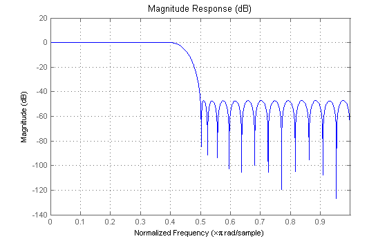
The pole/zero plot shows that there are no roots outside of the unit circle.
set(hfvt, 'Analysis', 'polezero');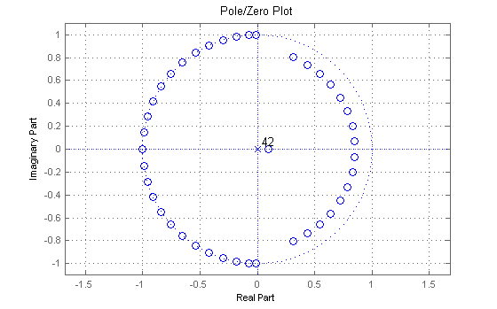